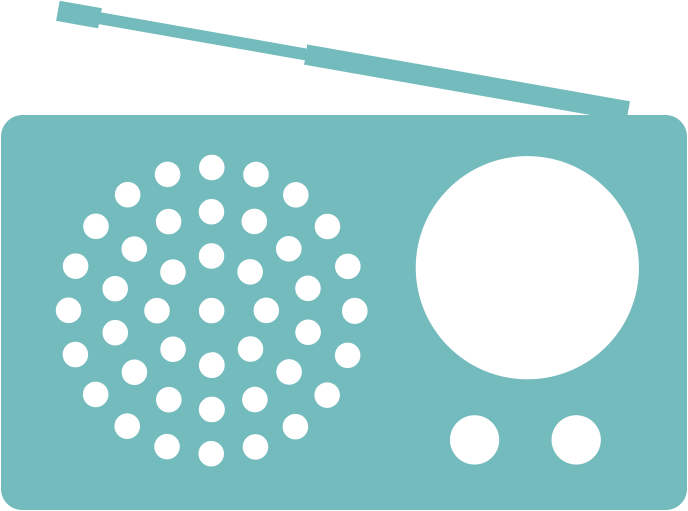
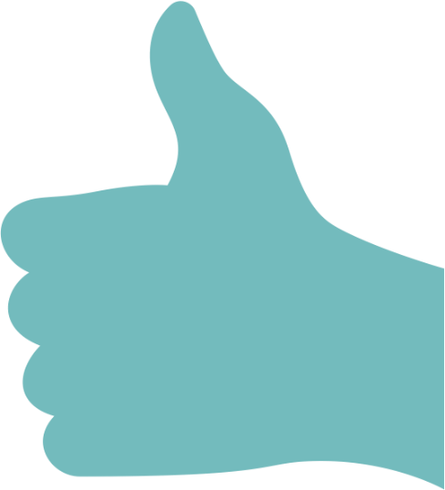
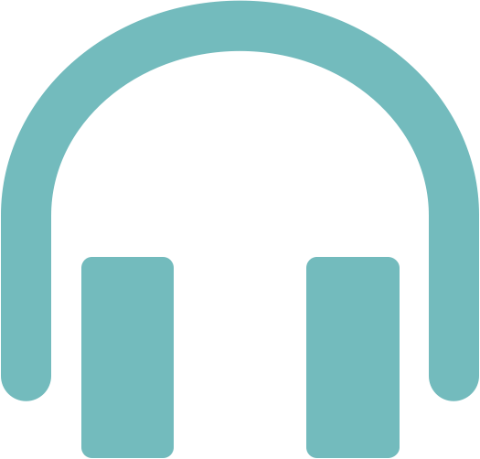
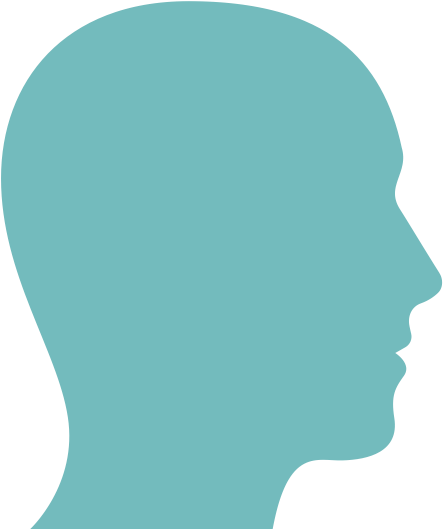

We shaped our outreach activities to have the greatest impact in the short-term given the urgency of the challenge we tackle - Sustainability. Our activities were broad, but underpinned by a common denominator - bring awareness to the unsustainability issue haunting human societies, and how safe and well-designed biotechnological processes can provide solutions NOW. We interacted with students from different levels and with the general public directly at multiple occasions. Our project was disseminated via several channels such as printed and online publications, radio stations, mainstream news channels, social networks, etc.... We were also featured in high-profile debates related to climate discussing directly with policy makers at the highest governmental levels. On a personal level, we were also quite proud to welcome a Syrian refugee to use our project as a springboard into Dutch society. Ultimately, when adding up the reach, even conservatively, we are well over one million people!
Engagement
The Nederlands Dagblad is a daily paper that writes about the news from a Christian point of view. Their readers are located in the less populated areas of the Netherlands.
Reach: 20,000 subscribers
Folia is the journalistic medium from the University of Amsterdam and the Hogeschool of Amsterdam (HvA), the magazine was founded in 1948. Nowadays they publish a magazine twice a month, have a news site and very active social media.
Reach: 75,000 students
AdValvas is the independent, journalistic platform by the Vrije Universiteit of Amsterdam. Their magazine and website are written by professional journalists and student-reporters. Their articles are open source and the magazine is published 20 times a year, which is distributed for free at the university.
Reach: 23,000 students
BNR is a commercial Dutch radio station and is the only all-news radio in the Netherlands. They have 1.2 million listeners daily and they interviewed us about the iGEM competition, our research and the applications of the project.
Reach: 1,500,000 listeners daily
Radio Swammerdam is the weekly science program of AmsterdamFM. There we talked about our project, our team and the iGEM competition. We also had a discussion about genetic modification and the risks of GMO’s in the wild.
Reach: 1,000 listeners daily
Mohammad Aljohmani helped us with our wiki and we helped him with his English and Dutch. We came in contact with him at a refugee meeting, where he volunteered to assist us.
High School Thesis. Two students came by our lab, because they were writing a thesis about synthetic biology. We told them what our project implies and showed the lab and our experimental setup.
Presentation at the VU. We presented our research project to master students, to show them what can be done with modeling the metabolism and modifying the genes of the Cyanobacteria.
Reach: All students from the Systems Biology Master
iGEM movie was recorded at Science Park during the summer vacation. We tried to explain the properties of the Cyanobacteria and to visualize the goal of our project. Also we wanted to show our workplace to our friends who were missing us this summer.
Reach: 5000 views
Climate Marathon movie was made during an event hosted by the Balie. We asked the attendees about their opinion on genetically modified organisms (GMO’s). The opinions of the guests there was very diverse and we comprised them in this movie.
Reach: 600 Attendees
Facebook, the goal of our Facebook page was to bring our progress to the public, we posted everything we published or where we got mentioned. Our whole team got introduced with individual texts and pictures. And also, we had a weekly post, Wisdom Wednesday, where our project was explained in easy to understand language.
Reach: 7000 people
Scientias.nl gives readers the latest news about science; astronomy, spacecraft, technology, physics, health, psychology, biology, weather, climate and history. In the Netherlands and Belgium, it is the biggest popular-scientific news site.
Reach: 500,000 unique readers a month
Amsterdam Smart City is an innovative platform for a future proof city, consisting of companies, start-ups, government organizations and foundations. They promote sustainable economic growth and help to develop new markets.
Reach: 3,500 organizations
Bedrock is an online magazine for a more healthy and aware lifestyle. Their main subjects are: mind, body and better world. They provide inspiration and motivation to help people with their personal development.
Reach: 200,000 unique readers a month
The Blue Deal helps companies and organisations to make a difference. They help them by making plans to be more sustainable and are specialized in water, energy and materials. They also have an online news platform, where they write about the latest developments in their area of expertise.
Reach: 5,000 unique readers a month
The University of Amsterdam is the biggest university of the Netherlands. On their site, they inform their students and alumni about the current research and the projects.
Reach: 30,000 students and 30,000 alumni
The Dutch Biotech Association (NVB) is the association for all professionals in the field of applied life sciences. They stimulate professional activities by exchanging knowledge and help their members with creating a network.
Reach: >1,000 members
UnitedConsumers finds it important to take its responsibilities, so they supply green electricity to all its customers. Also, United Consumers informs and advises consumers on energy saving options, for example via their site where they post news about sustainability.
Reach: 500,000 customers
Podcast Episode 1
Our Podcast about genetically modified organisms consists of three episodes. We talk with Zoë Robaey, expert in the ethics of biotechnology, Peter Mooij, algae researcher at the TU Delft and author of the book 'de Dikke Alg' (the Fat Algae) and Korienke Smit, a biosafety expert. Our guests discussed different aspects of GMO’s and how they influence the future prospective from their field of expertise.
Reach: 50 Listeners
Climate Marathon was a 6-hour conference hosted by De Balie; a centre for politics, culture and media. During the event, multiple prominent speakers discussed the future of environmental change and the possibilities for the energy transition. We asked the attendees about their opinion on genetically modified organisms (GMO’s) and made a movie out of this!
Reach: 600 Attendees
Knowledge parade an initiative from the RIVM, where visitors learned about how to consume healthy, sustainable and safe nutrition. Again, children could write their name in cyanobacteria. We hope it inspires the new generation to get interested in microbiology!
Reach: 1500 Attendees
Newsletter For all our sponsors, friends, family and other interested people, we made a bimonthly newsletter. In this newsletter, we show our new sponsors, the media attention we had in the past months and the progress we made in the lab.
Reach: 200 people